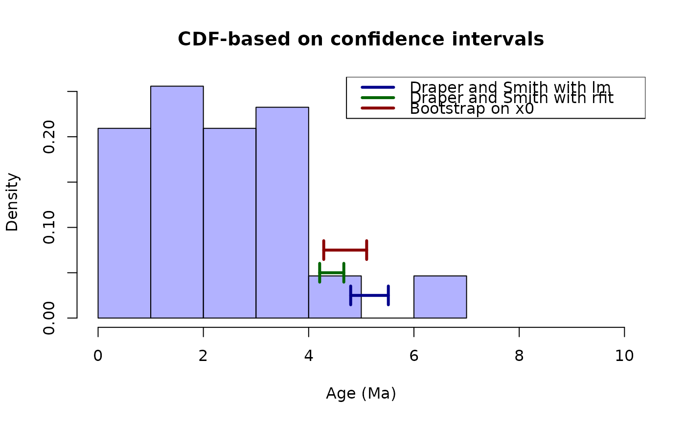

xintercept: Estimate the x-intercept of an empirical cdf
Usage
xintercept(x, method, alpha = 0.05, p = c(0.025, 0.975), R = 1000, robust)Arguments
- x
A vector of type numeric with time data points.
- method
Either "Draper-Smith" or "Bootstrap". The function will fail otherwise.
- alpha
A vector of length one and type numeric with the nominal alpha value for the Draper-Smith method, defaults to 0.05.
- p
A vector of length two and type numeric with the two-tail probability values for the CI. Defaults to 0.025 and 0.975.
- R
The number of iterations to be used in the Bootstrap method.
- robust
Logical value indicating whether to use robust regression using `Rfit::rfit` (`robust = TRUE`) or ordinary least squares `lm` (`robust = FALSE`).
Value
A named list with three elements: `param`, the value of x_hat; `ci`, the lower and upper values of the confidence interval on x; `ecdfxy`, the x and y points for the empirical cumulative density curve.
Details
This function will take a vector of time points, calculate the empirical cumulative density function, and regress its values in order to infer the x-intercept and its confidence interval. For plotting purposes, it will also return the x-y empirical cumulative density values.
Examples
data(andes)
ages <- andes$ages
ages <- ages[complete.cases(ages)] # remove NAs
ages <- ages[which(ages < 10)] # remove outliers
# \donttest{
# Draper-Smith, OLS
draperSmithNormalX0 <- xintercept(x = ages, method = "Draper-Smith", alpha = 0.05, robust = FALSE)
# Draper-Smith, Robust fit
draperSmithRobustX0 <- xintercept(x = ages, method = "Draper-Smith", alpha = 0.05, robust = TRUE)
# Bootstrap, OLS
bootstrapNormalX0 <- xintercept(x = ages, method = "Bootstrap", p = c(0.025, 0.975), robust = FALSE)
# Bootstrap, Robust fit
bootstrapRobustX0 <- xintercept(x = ages, method = "Bootstrap", p = c(0.025, 0.975), robust = TRUE)
#> Warning: rfit: Convergence status not zero in jaeckel
# plot the estimations
hist(ages, probability = TRUE, col = rgb(red = 0, green = 0, blue = 1, alpha = 0.3),
xlim = c(0, 10), main = "CDF-based on confidence intervals", xlab = "Age (Ma)")
# plot the lines for the estimator of Draper and Smith using lm
arrows(x0 = draperSmithNormalX0$ci["upper"], y0 = 0.025, x1 = draperSmithNormalX0$ci["lower"],
y1 = 0.025, code = 3, angle = 90, length = 0.1, lwd = 3, col = "darkblue")
# plot the lines for the estimator of Draper and Smith using rfit
arrows(x0 = draperSmithRobustX0$ci["upper"], y0 = 0.05, x1 = draperSmithRobustX0$ci["lower"],
y1 = 0.05, code = 3, angle = 90, length = 0.1, lwd = 3, col = "darkgreen")
# plot the lines for the estimator based on bootstrap
arrows(x0 = bootstrapRobustX0$ci["upper"], y0 = 0.075, x1 = bootstrapRobustX0$ci["lower"],
y1 = 0.075, code = 3, angle = 90, length = 0.1, lwd = 3, col = "darkred")
# plot a legend
legend(x = "topright", legend = c("Draper and Smith with lm", "Draper and Smith with rfit",
"Bootstrap on x0"),
col = c("darkblue", "darkgreen", "darkred"), lty = 1, lwd = 3)

# }